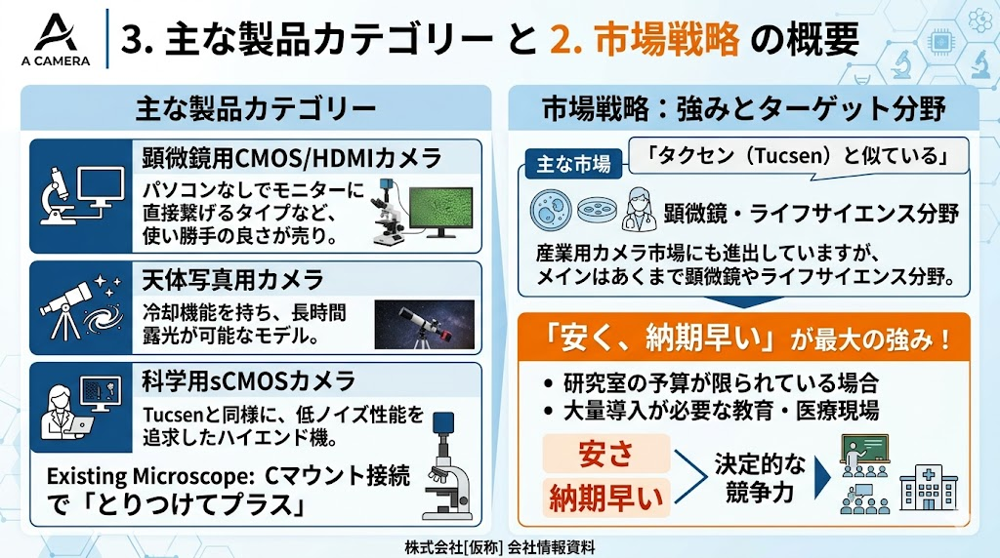

科学研究および産業検査において、高解像度イメージングの重要性は高まっている。しかし、従来のハイエンド機材は「高コスト」「複雑なPC連携」「長納期」という物理的・経済的制約を有しており、教育現場や大量導入が必要な医療・製造現場において、技術普及のボトルネックとなっていた。

図1：AIOCAM4Kシリーズの技術構成

図2：主な製品カテゴリーと市場戦略
4KモニターとStarvis 2センサーを統合。Cマウント接続により、既存の顕微鏡をデジタル化する「とりつけてプラス」のアプローチを採用し、インフラコストを最小化する。
PCを介さずモニターに直接出力。リアルタイム性を重視した設計で、観察のスループットを向上させる。
Tucsen（タクセン）等のハイエンド機と同等の低ノイズ性能を追求。微弱光観察における定量性を確保する。
ペルチェ冷却機構を搭載し、長時間の露光における熱ノイズを物理的に抑制する。
「安さ」と「納期の早さ」を軸とした供給網の最適化は、単なる価格競争ではなく、イメージング技術のコモディティ化を促進する戦略である。予算制約の厳しい研究室や、教育・医療現場への迅速な大量導入を可能にすることで、科学的知見の蓄積と品質管理の精度向上に寄与する。
ライフサイエンス分野を主軸としつつ、産業用カメラ市場へも進出。物理的な観察精度（高S/N比、低遅延）を、経済的合理性と共に提供することが、社会実装における決定的な競争力となる。